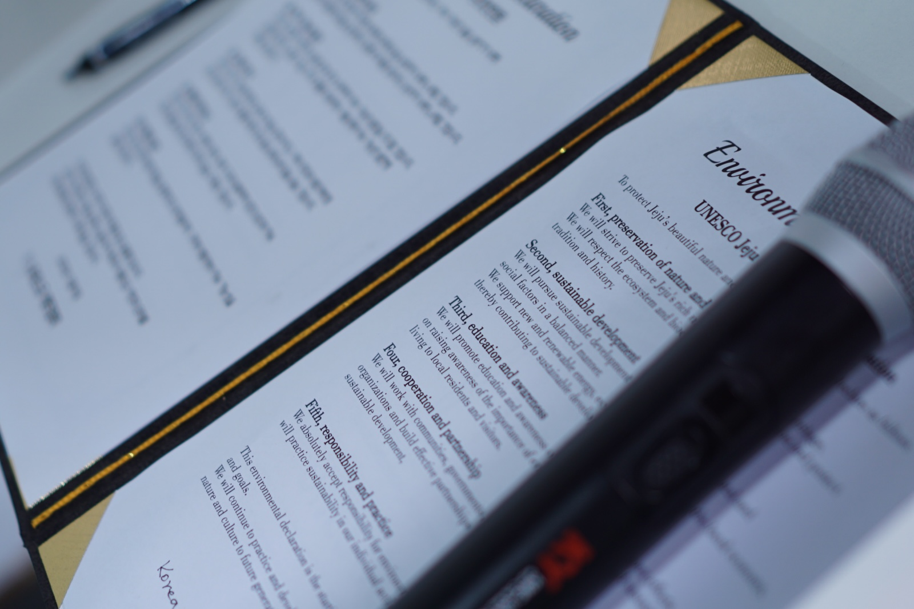

The UNESCO is a specialized agency of the United Nations with the aim of
promoting world peace and security through international cooperation in education, arts,
sciences and culture.
U&W pursues multiculturalism and diversity by providing
cultural exchange opportunities for youths around the world.
U&W believe that youths with social responsibility are
competent to embrace international understanding, peace, and sustainable development.

Our Team
Yerin Kang
President
dm.yrkang@gmail.com
Second-year student at Washington University in St. Louis